Noise Map from Point Source - GUI
In this tutorial, we are going to produce a noise map, based on a unique source point. The exercice will be made through NoiseModelling with Graphic User Interface (GUI).
To make it more simple, we will use the data used in the Get Started - GUI tutorial.
This tutorial is divided in 5 steps:
Create the source point
Import data in NoiseModelling
Generate the noise map
Play with options
Take into account directivity
Step 1: Create the source point
To create the source point, we will use the free and opensource GIS software QGIS.
Note
For those who are new to GIS and want to get started with QGIS, we advise you to follow this tutorial as a start.
Load data into QGIS
Once installed, launch QGIS and load the three buildings.shp, roads.shp and ground_type.shp files (that are in the folder ../NoiseModelling_4.0.0/data_dir/data/wpsdata/). To do so, you can just drag & drop these files into the Layers menu (bottom left of the user interface). Or you can also select them thanks to the dedicated panel opened via the Layer / Add a layer / Add a vectorial layer... / menu (or use Ctrl+Maj+V shortcut)
You should see your input data in the map as below:
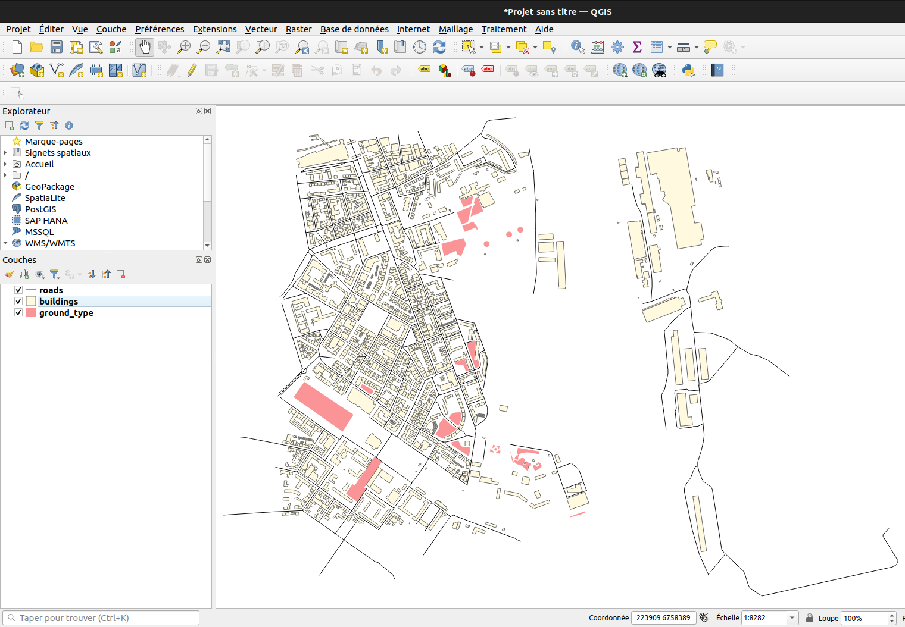
Initialize the source point layer
In QGIS, we will create a new empty layer called Point_Source in which we will add the source point.
To do so, click on the Layer / Create Layer / New Temporary Scratch Layer... / menu. In the opened dialog, fill the detailed information below :
File name:Point_SourceGeometry type: choosePointin the dropdown listInclude Z dimension: check the box. This way the created point will be defined with X, Y and Z coordinatesIn the projection system dropdown list, choose a metric system. Here we will choose the one used for the buildings, roads and ground_type layers, that are in metropolitan France : Lambert 93 system =
EPSG:2154(if the system is not present in the dropdown list, use theGlobeicon on the right to find it)
In the New field part, fill the information below:
Name: PK . Unique id (Primary Key)Type: IntegerLength: 2
Once done, click on Add to Fields List. Then redo this step with the following informations:
Name: LWD500 . Source noise level (LW) during the day (D) at a frequency of 500 HzType: Decimal numberLength: 5Precision: 2
You should have something like this
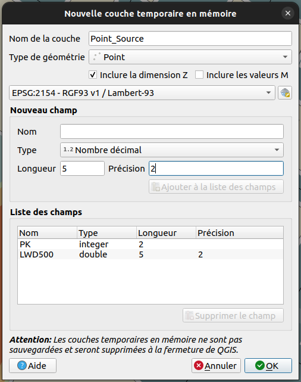
Once done, click on OK button. The new layer Point_Source should appear in your Layers panel.
Add a new source point
Now we have an empty layer. It’s time to feed it with a point geometry.
By default, the new temporary layer is already turned into edtion mode. If not, you can activate it thanks to these two options:
In the
Layerspanel, select thePoint_Sourcelayer and make a right-click. ChooseToggle Editingor you can click on the “Yellow pencil” icon in the toolbar
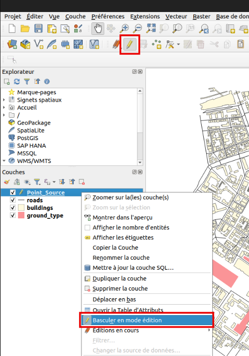
Now we can add a new point, by clicking on the dedicated icon (see illustration below) and then by clicking somewhere in the map.
To have an interesting resulting noise map, choose to place your source point next to buildings.
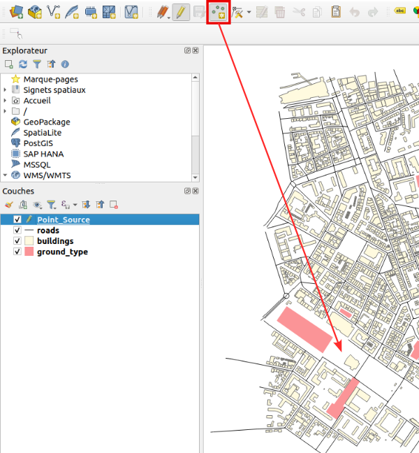
Click on the map where you want to create the source point. Once clicked, a new dialog appears and you are invited to fill the following attributes:
PK: 1LWD500: 90
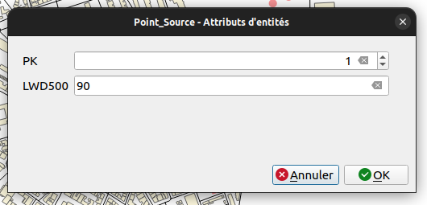
Once done, click on OK. The source point is now visible in the map (the blue point in the illustration below).
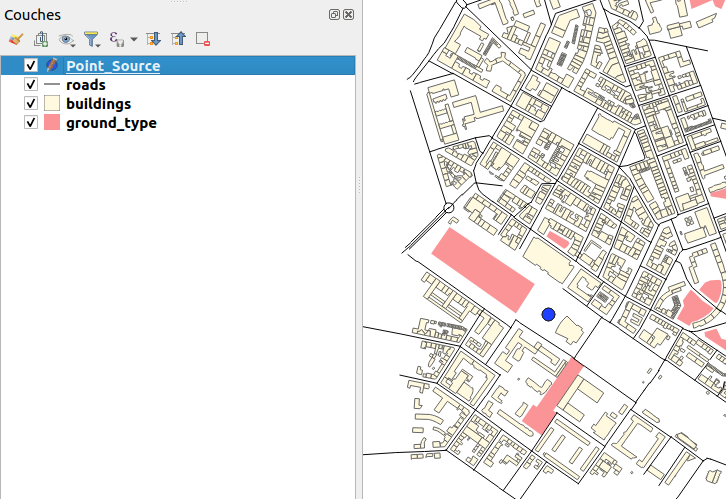
Now, we have to save this temporary layer into a flat file. To do so, just make a right-click on the layer name and choose the Make permanent option.
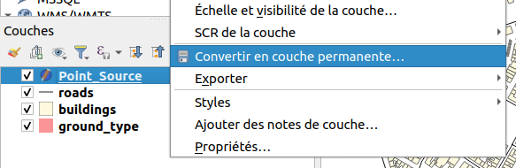
In the new dialog, select GeoJSON file format and then define the path and the name of your resulting .geojson file. Press OK when ready.
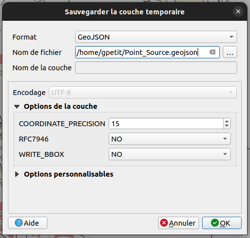
Your Point_Source.geojson file is now ready to be imported in NoiseModelling.
For your information, you can open .geojson files in most of text editor. If you do so with Point_Source.geojson, you will have something like this:
{
"type": "FeatureCollection",
"name": "Point_Source",
"crs": {"type": "name", "properties": { "name": "urn:ogc:def:crs:EPSG::2154" } },
"features": [{"type": "Feature", "properties": { "PK": 1, "LWD500": 90.0 },
"geometry": {"type": "Point", "coordinates": [223771.0727, 6757583.2983, 0.0]}
}]
}
Step 2: Import input data in NoiseModelling
Once NoiseModelling is launched (see Step 2: Start NoiseModelling GUI in Get Started - GUI page), load the four BUILDINGS, ROADS and GROUND_TYPE, POINT_SOURCE layers (see Step 4: Load input files for more details).
If you use the Database_Manager:Display_Database WPS script, you should see your four tables like below:
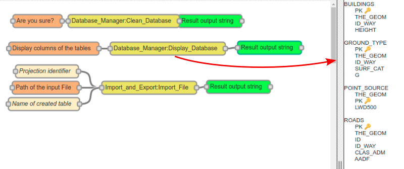
Step 3: Generate the noise map
We are now ready to generate the noise map, based on a unique source point.
Create the receivers grid
Use the Receivers:Delaunay_Grid WPS script. Fill the two following mandatory parameters (in orange) and click on Run Process button:
Source table name:POINT_SOURCEBuildings table name:BUILDINGS
Once done, you should have two new tables : RECEIVERS (illustrated below with the purple small points) and TRIANGLES
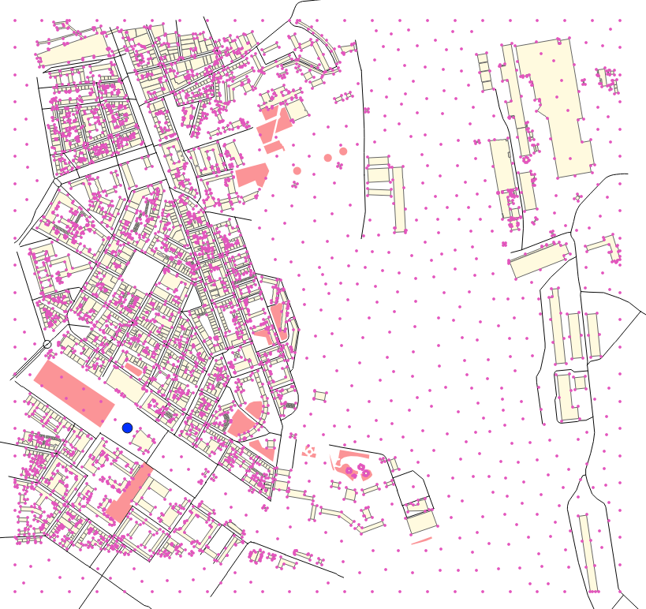
Calculate noise levels
Use the NoiseModelling:Noise_level_from_source WPS script. Fill the three following mandatory parameters (in orange):
Source table name:POINT_SOURCEReceivers table name:RECEIVERSBuildings table name:BUILDINGS
Warning
For this example, since we only added information for noise level during the day (field LWD500), we have to skip the noise level calculation for AttenuatedPaths, LNIGHT and LEVENING. To do so, check the boxes for Do not compute LDEN_GEOM, Do not compute LEVENING_GEOM and Do not compute LNIGHT_GEOM options.
Once ready, click on Run Process button.
You should then have this message: Calculation Done ! LDAY_GEOM table(s) have been created.
Generate noise level isosurfaces
Use the Acoustic_Tools:Create_Isosurface WPS script. Fill the following mandatory parameter (in orange) and click on Run Process button:
Sound levels table:LDAY_GEOM
You should have this message: Table CONTOURING_NOISE_MAP created
Now, you can export this table into a .shapefile, using the Import_and_Export:Export_Table WPS script.
You can then visualize this file into QGIS (just load the file as seen before). The resulting table (in grey) is illustred below
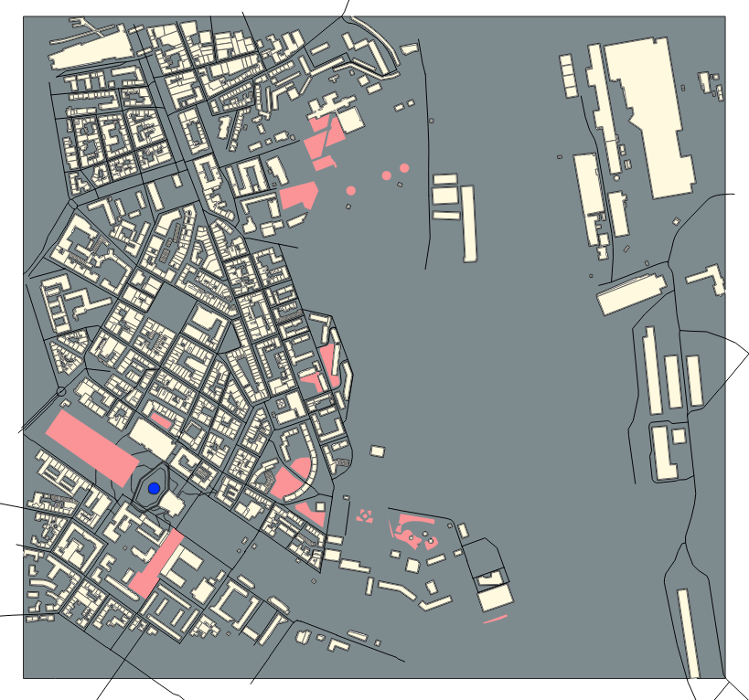
Apply a color palette adapted to acoustics
In QGIS, since the isosurface table is not easy to read (everything is grey in our example), we will change the color palette to have colors depending on the noise levels. This information is present in the field ISOLVL in the attributes table. To open it, just select the layer CONTOURING_NOISE_MAP and press F6.
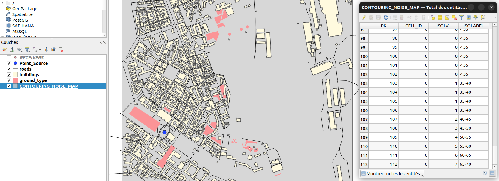
To adapt the colors, we will apply a cartographic style. This style:
has been proposed by B. Tomio (Weninger) in “A Color Scheme for the Presentation of Sound Immission in Maps : Requirements and Principles for Design” (see publication and website)
is provided (by NoiseModelling team) as a
.sld(Style Layer Descriptor) file and can be downloaded here
Note
If you want to know more about noise map styles, you should read the “Noise Map Color Scheme” page.
Once downloaded, make a double click on the layer CONTOURING_NOISE_MAP. It will opens the property panel. Here, click on the Symbology tab.
In the Style menu (at the bottom), choose Load style. Then in the opened dialog, click on the ... icon to search the style_beate_tomio.sld file. Once selected, click on Load style.
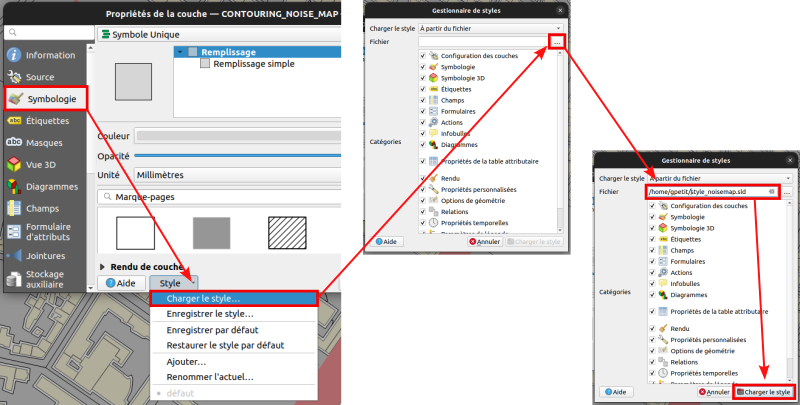
The style with its different colors is now displayed.
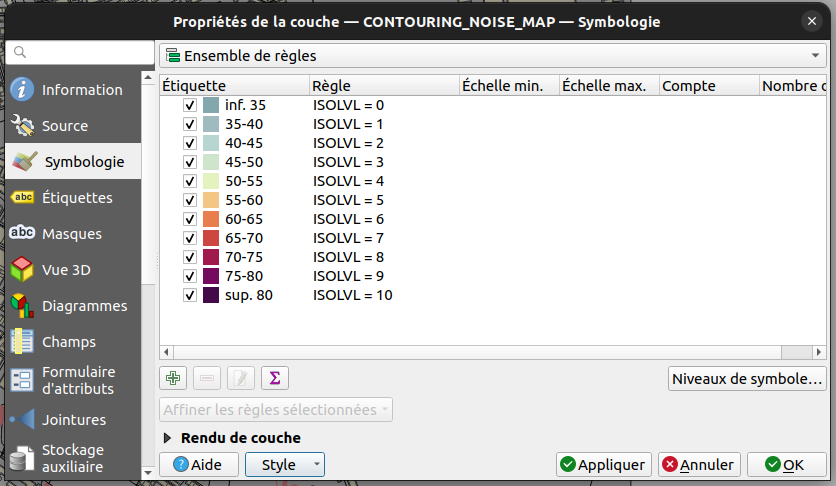
Press OK to apply and close the dialog. Your noise map is now well colorized and you can navigate into it to see the influence of buildings on noise levels.
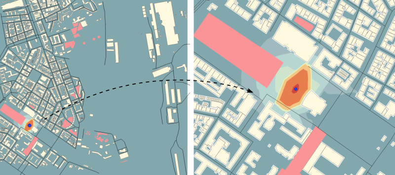
Step 4: Change the default parameters
To produce this noise map, we used, in most of WPS scripts, default parameters (e.g the height of the source, the number of reflections, the air temperature, …). You are prompted to redo some of the previous steps by changing some of the settings. You will then be able to visually see what impact they have on the final noise map.
Note
To change optionnal parameters (the yellow boxes) just select them and fill the needed informations in the right-side menu.
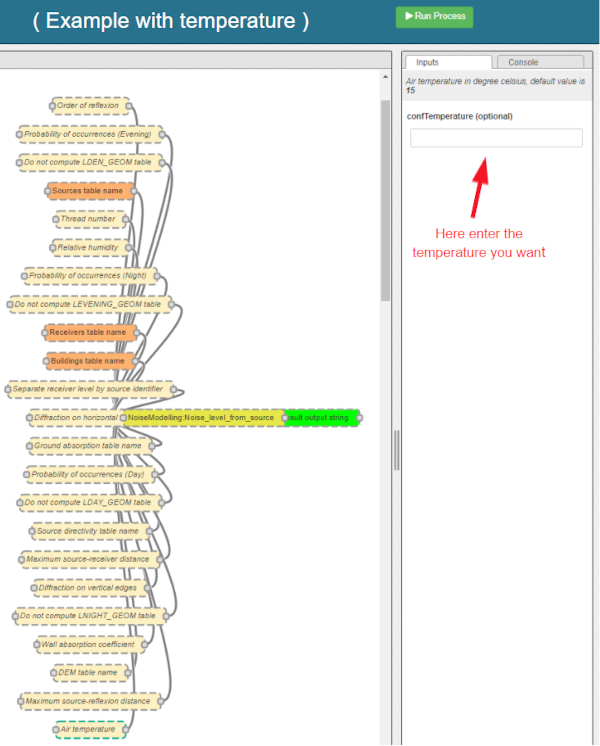
Step 5 (bonus): Change the directivity
In this bonus step, we will manage with the directivity. To do so, we will apply the following method:
Get directivity
Update the
Source_PointtableImport needed data into NoiseModelling
Produce the noise map, taking into acount directivity parameters
Directivity
The directivity table aims at modeling a realistic directional noise source. To do so, we associate to each “Theta-Phi” pair an attenuation in dB.
DIR_ID: identifier of the directivity sphereTHETA: vertical angle in degrees, 0 (front), -90 (bottom), 90 (top), from -90 to 90PHI: horizontal angle in degrees, 0 (front) / 90 (right), from 0 to 360LW500: attenuation levels in dB for 500 Hz
Each of the sound sources has its own directivity. For the exercise we will use the directivity of a train, which is provided in the file Directivity.csv and which you are invited to download.
DIR_ID |
THETA |
PHI |
LW500 |
|---|---|---|---|
1 |
-90 |
0 |
-20 |
1 |
-85 |
0 |
-20 |
1 |
-80 |
0 |
-20 |
1 |
-75 |
0 |
-20 |
1 |
-70 |
0 |
-20 |
1 |
-65 |
0 |
-20 |
… |
… |
… |
… |
Below is an illustration generated from train directivity formula.
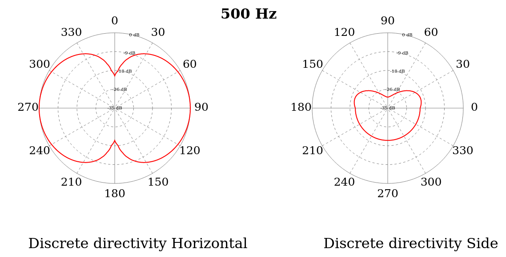
Update source point table
To play with directivity, we need to add 4 fields in the source point table:
- Yaw
Name: YAWDescription: Source horizontal orientation in degrees. For points 0° North, 90° East. For lines 0° line direction, 90° right of the line direction.Type: Decimal numberLength: 4
- Pitch
Name: PITCHDescription: Source vertical orientation in degrees. 0° front, 90° top, -90° bottom. (FLOAT).Type: Decimal numberLength: 4
- Roll
Name: ROLLDescription: Source roll in degreesType: Decimal numberLength: 4
- Direction identififier
Name: DIR_IDDescription: Identifier of the directivity sphere from tableSourceDirectivity parameter or train directivity if not provided -> OMNIDIRECTIONAL(0), ROLLING(1), TRACTIONA(2), TRACTIONB(3), AERODYNAMICA(4), AERODYNAMICB(5), BRIDGE(6)Type: IntegerLength: 2
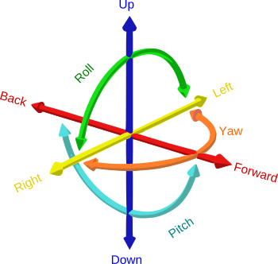
Note
Source image: GregorDS, CC BY-SA 4.0, via Wikimedia Commons
{kind=link}
In our example, we will update the Point_Source.geojson file to add these columns and to fill them with new information. To do so, just edit the file into a text editor and replace the following lines. Save it once done.
{ "PK": 1, "LWD500": 100.0}
by
{ "PK": 1, "LWD500": 100.0, "YAW": 45, "PITCH": 0, "ROLL": 0, "DIR_ID" : 1 }
Here we can see that the Yaw is setted to 45°. Pitch and Roll are equal to 0, and the directivity is defined as 1 and will refer to the directivy table (see below).
So your final .geojson file should look like this
{
"type": "FeatureCollection",
"name": "Point_Source",
"crs": {"type": "name", "properties": { "name": "urn:ogc:def:crs:EPSG::2154" } },
"features": [{"type": "Feature", "properties": { "PK": 1, "LWD500": 100.0, "YAW": 45, "PITCH": 0, "ROLL": 0, "DIR_ID" : 1 },
"geometry": {"type": "Point", "coordinates": [223771.0727, 6757583.2983, 0.0]}
}]
}
Import data
Now, in NoiseModelling we have to:
Import the
Directivy.csvfileReimport the
Point_Source.geojsonfile in order to take into account the changesImport the
dem.geojsonfile, which is placed here./NoiseModelling_4.0.0/data_dir/data/wpsdata/dem.geojson. By taking into account the ground elevation, this file will help us to get better results.
To do so, just use the Import_and_Export:Import_Table WPS script.
Generate the Delaunay triangulation
Use the Receivers:Delaunay_Grid WPS script. Fill the following parameters and click on Run Process button:
Sources table name:POINT_SOURCEMaximum Area:60Buildings table name:BUILDINGSHeight:1.6
Compute noise level from source
Use the NoiseModelling:Noise_level_from_source WPS script. Fill the following parameters and click on Run Process button:
Sources table name:POINT_SOURCEBuildings table name:BUILDINGSReceivers table name:RECEIVERSGround absorption table name:GROUND_TYPESource directivity table name:DIRECTIVITYMaximum source-receiver distance:800Do not compute LDEN_GEOM table:trueDo not compute LNIGHT_GEOM table:trueDo not compute LEVENING_GEOM table:trueDEM table name:DEM
Create isosurface
Use the Acoustic_Tools:Create_Isosurface WPS script. Fill the following parameters and click on Run Process button:
Sound levels table:LDAY_GEOMPolygon smoothing coefficient: 0.4
Export and visualize resulting tables
Use the Import_and_Export:Export_Table WPS script to export the CONTOURING_NOISE_MAP table into a shapefile called CONTOURING_NOISE_MAP_DIRECTIVITY.
Then, load CONTOURING_NOISE_MAP_DIRECTIVITY.shp into QGIS. Apply the noisemap_style.sld style, and compare with CONTOURING_NOISE_MAP.shp produced in Step 3.
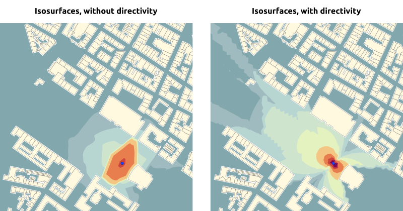